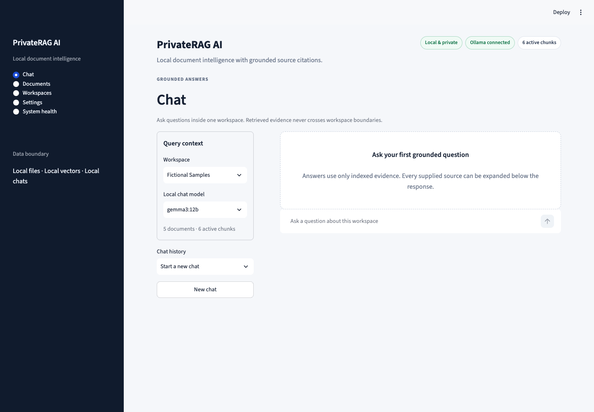

01 · Local AI
PrivateRAG AI
A local document assistant that keeps files, embeddings, conversations, and model requests on the machine running the application.
- Workspace-isolated retrieval with inspectable source citations
- FastAPI boundary with a Streamlit client
- Offline evaluation for retrieval, refusal, conflicts, and prompt-injection-like text
- Automated tests, type checking, migrations, Docker, and CI
Python · FastAPI · Ollama · ChromaDB · Streamlit · SQLite
Explore the repository